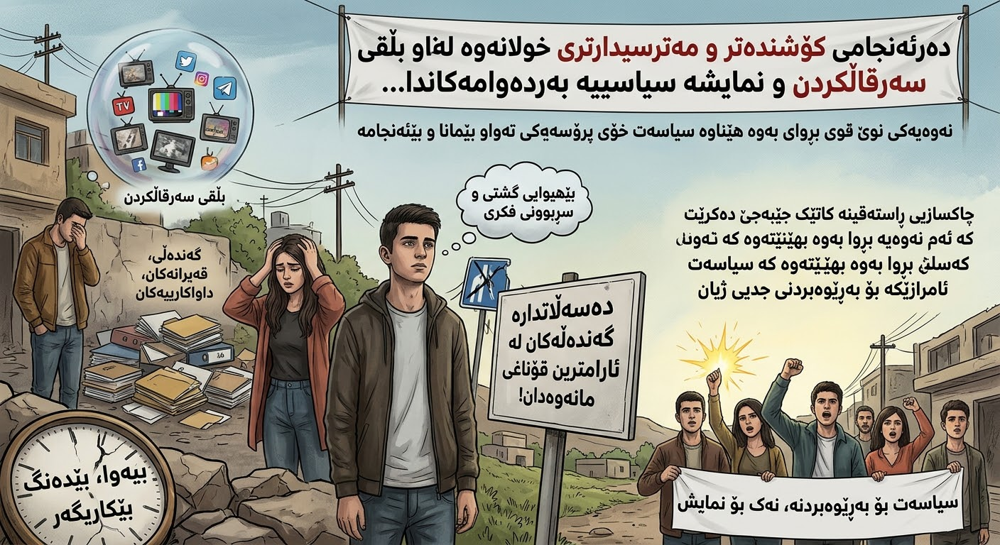

نەوەیەکی بێهیوکراو؛ گەورەترین شکستی سیستەمی حوکمڕانی لە عێراق و هەرێمی کوردستان

لە نێوان قەیرانە سیاسییەکان، سکاندالەکانی گەندەڵی، نمایشە میدیاییەکان و بەڵێنە دووبارەبووەکانی بەرپرساندا، مەترسییەکی قووڵتر هەیە کە زۆرجار لە ژێر سەروصدای ڕووداوە ڕۆژانەکاندا ون دەبێت: لەدەستدانی متمانەی نەوەی نوێ بە سیاسەت و داهاتووی خۆی.
ئەمڕۆ کێشەکە تەنیا ئەوە نییە کە حکومەتەکان ناتوانن کێشەکانی هاووڵاتییان چارەسەر بکەن؛ کێشەی گەورەتر ئەوەیە کە بەشێک لە خەڵک چیتر بڕوایان بە توانای گۆڕانکاری نەماوە. ئەمە قۆناغێکی مەترسیدارە؛ چونکە کاتێک هاووڵاتی بڕوای بە کاریگەریی دەنگ و داواکاریی خۆی لەدەست بدات، ئەوا بێهیوایی جێگەی بەشداریی سیاسی و بێدەنگی جێگەی لێپرسینەوە دەگرێتەوە.
سیاسەت؛ لە ئامرازی چارەسەرەوە بۆ نمایشێکی بەردەوام
لە ژێر سایەی ئەم بارودۆخەدا، سیاسەت لە هەندێک کاتدا لە ئامرازێک بۆ چارەسەرکردنی کێشەکانی خەڵک، دەگۆڕێت بۆ نمایشێک بۆ سەرقاڵکردنیان. هەر ڕۆژ بابەتێکی نوێ، ناکۆکییەکی نوێ، وتارێکی نوێ و جەنجاڵێکی نوێ دەخرێتە پێش چاوی خەڵک؛ بەڵام پرسیارە بنەڕەتییەکان هەر بەبێ وەڵام دەمێننەوە.
مووچەی هاووڵاتی، نەبوونی هەلی کار، دۆخی نەخۆشخانەکان، خوێندنگەکان، ژێرخان، گەندەڵی و نەبوونی لێپرسینەوە، نابێت لەژێر سەروصدای جەنجاڵییە سیاسییەکاندا لەبیر بکرێن. هیچ سکاندالێکی نوێ نابێت ببێتە هۆی ئەوەی پرسیارە کۆنەکان بێ وەڵام بمێننەوە.
گەنجان؛ لە هیوای گۆڕانکارییەوە بۆ بیرکردنەوەی کۆچ
یەکێک لە نیشانە هەستیارەکانی ئەم قەیرانە ئەوەیە کە بەشێک لە گەنجان، لەبری بیرکردنەوە لە چۆنیەتی چاککردنی سیستەم، تەنیا بیر لە چۆنیەتی دەرچوون لێی دەکەنەوە. کۆچکردن، دوورکەوتنەوە لە کاروباری گشتی و بێزاربوون لە هەموو بابەتێکی سیاسی، دەبنە هەڵبژاردەیەکی زیاتر لەبەردەم نەوەیەکدا کە هیوای بە داهاتووی خۆی کەم بووەتەوە.
ئەمە نابێت تەنیا بە هەڵبژاردەی تاکەکەسی یان نەبوونی ئارەزووی کار لە ناوخۆدا لێک بدرێتەوە. دەبێت پرسیار بکرێت: بۆچی گەنجێک کە توانای خوێندن، کارکردن و بەشداری لە بونیادنانی وڵاتێکیدا هەیە، هەست دەکات داهاتووی لە دەرەوەی وڵاتەکەیە؟
بێدەنگیی خەڵک بە مانای ڕەزامەندی نییە
دەسەڵات نابێت بێدەنگیی خەڵک بە نیشانەی ڕەزامەندی لێک بداتەوە. هاووڵاتییەک کە چیتر ناڕەزایی دەربڕین ناکات، لەوانەیە ماندوو بووبێت، لەوانەیە هەست بکات گوێی لێ ناگیرێت، یان لەوانەیە بڕوای بە هیچ ئەنجامێک نەماوە.
مەترسیدارترین دۆخ بۆ هەر سیستەمێکی سیاسی ئەوەیە کە خەڵک چیتر داوای لێپرسینەوە نەکەن؛ نەک لەبەر ئەوەی هەموو شتێک باشە، بەڵکو لەبەر ئەوەی بڕوایان بە وەڵامدانەوەی دەسەڵات لەدەست داوە.
کێ بەرپرسیارە لە گەڕاندنەوەی متمانە؟
گەڕاندنەوەی متمانە بە وتاری جوان و بانگەشەی سیاسی ناکرێت. ئەمە پێویستی بە کردارێکی ڕوون و پێوانەکراو هەیە: لێپرسینەوە لە گەندەڵی، شەفافیەت لە داهات و خەرجیی گشتی، سەروەریی یاسا، دامەزراوەیەکی سەربەخۆ، خزمەتگوزاریی باش و دەرفەتی یەکسان بۆ گەنجان.
هەر حکومەتێک خۆی بە نوێنەری خەڵک دەزانێت، دەبێت ئامادە بێت بە کردار و ئەنجام وەڵامی پرسیارەکانی خەڵک بداتەوە، نەک تەنیا بە بەڵێن و وتار.
کۆتایی: مەترسییەکە لە بێهیواییی نەوەیەکدایە
گەورەترین شکست بۆ هەر سیستەمێکی حوکمڕانی تەنیا ئەوە نییە کە نەتوانێت کێشەکان چارەسەر بکات؛ بەڵکو ئەوەیە کە نەوەیەک بگەیەنێتە ئەو قۆناغەی چیتر چاوەڕوانی چارەسەر نەکات.
کاتێک گەنجان بڕوایان بە گۆڕانکاری لەدەست دەدەن، زیانەکە تەنیا بۆ ئەمڕۆ نییە؛ زیانەکە بۆ داهاتووی کۆمەڵگەیەکە. چونکە وڵات بە سەرچاوەی نەوت و بودجە و بیناسازی تەنیا بونیاد نانرێت؛ وڵات بە متمانە، دادپەروەری، دامەزراوەی بەهێز و هیوا بۆ نەوەی داهاتوو بونیاد دەنرێت.
ئەگەر دەسەڵاتداران ناتوانن متمانەی خەڵک بگەڕێننەوە، ئەوا نابێت سەرسام بن کە نەوەی نوێ چیتر گوێ لە بەڵێنەکانیان ناگرێت. چونکە کۆمەڵگەیەک کە هیوای لێ بسەنرێتەوە، تەنیا متمانەی بە حکومەت لەدەست نادات؛ بەڵکو بەشێک لە باوەڕی بە داهاتووی خۆشی لەدەست دەدات.